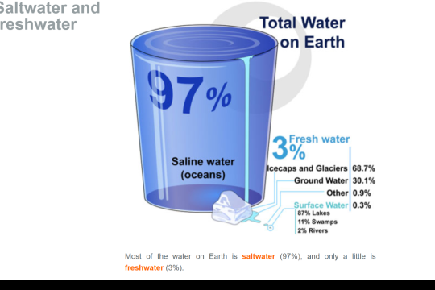

Phenomenon
Most of the water found on the Earth is saltwater, not freshwater.

Saltwater and freshwater
97%
Saline water (oceans)
Total Water on Earth
- Fresh water
- 3%
- Icecaps and Glaciers 68.7%
- Ground Water 30.1%
- Other 0.9%
- Surface Water 0.3%
- Lakes 87%
- Swamps 11%
- Rivers 2%
Most of the water on Earth is saltwater (97%), and only a little is freshwater (3%).
Image by Mariana Ruiz Villarreal (LadyofHats) for the CK-12 Foundation, CC BY-NC 3.0